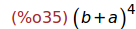

Tema CS1: Introducción a Maxima
(Ejercicios resueltos)
1 Primeros pasos con Maxima
Ejercicio 1.1. Calcular el valor de 5+(2/3)^(-2)
(%i1)
5+(2/3)^(-2);
2 Maxima como calculadora
Ejercicio 2.1. Calcular el factorial de 100.
(%i2)
100!;
Ejercicio 2.2. Observad que no se han mostrado todas las cifras.
Obtener todas las cifras cambiando la pantalla 2D.
(%i3)
set_display(ascii)$ 100!; set_display(xml)$
Ejercicio 2.3. Calcular la raíz cuadrada de 4.
(%i6)
sqrt(4);
Ejercicio 2.4. Calcular la raíz cuadrada de 5.
(%i7)
sqrt(5);
Ejercicio 2.5. Observad que la raiz de 5 la muestra de forma simbólica.
Calcular el valor aproximado del resultado anterior
(%i8)
float(%);
Ejercicio 2.6. Asignar a la variable a el valor 5^2.
(%i9)
a : 5^2;
Ejercicio 2.7. Calcular el valor de sqrt(a)+1/a
(%i10)
sqrt(a)+1/a;
Ejercicio 2.8. Asignar a la variable c el valor b^2.
(%i11)
c:b^2;
Ejercicio 2.9. Calcular el valor de la raíz cuadrada de c.
Observad que Maxima puede trabajar a nivel simbólico.
(%i12)
sqrt(c);
Ejercicio 2.10. Calcular el valor de a+A.
Observad que Maxima distingue entre letras minúsculas y mayúsculas.
(%i13)
a+A;
Ejercicio 2.11. Calcular los valores de Exp(0) y de exp(0).
(%i14)
Exp(0); exp(0);
Ejercicio 2.13. Calcular el logaritmo neperiano de e.
(%i16)
log(%e);
Ejercicio 2.14. Calcular el valor de la constante pi.
(%i17)
%pi;
Ejercicio 2.15. Calcular el valor aproximado de pi.
(%i18)
float(%pi);
Ejercicio 2.16. Calcular el valor de pi con 100 cifras decimales.
(%i19)
fpprec : 100;
(%i20)
bfloat(1000*%pi);

(%i21)
set_display(ascii)$ bfloat(1000*%pi); set_display(xml)$

3 Los complejos
Ejercicio 3.1. Calcular la raíz cuadrada de -1.
(%i24)
sqrt(-1);
Ejercicio 3.2. Calcular el cuadrado de la unidad imaginaria.
(%i25)
%i^2;
Ejercicio 3.3. Asignar a z el número complejo (1+i)^2/(1-2*i)
(%i26)
z : (1+%i)^2/(1-2*%i);
Ejercicio 3.4. Calcular la forma cartesiana de z.
(%i27)
rectform(%);
Ejercicio 3.5. Calcular la parte real de z.
(%i28)
realpart(z);
Ejercicio 3.6. Calcular la parte imaginaria de z.
(%i29)
imagpart(z);
Ejercicio 3.7. Calcular el módulo de z.
(%i30)
abs(z) ;
Ejercicio 3.8. Calcular el argumento de z.
(%i31)
carg(z);
Ejercicio 3.9. Calcular la forma polar de z.
(%i32)
polarform(z);
Ejercicio 3.10. Calcular la forma algebraica de z^4
(%i33)
rectform(z^4);
4 Cálculos algebraicos básicos
Ejercicio 4.1. Borrar los valores de todas las variables.
(%i34) remvalue(all)$
Ejercicio 4.2. Asignar a la variable y la expresión (a+b)^4
(%i35)
y : (a+b)^4;

Ejercicio 4.3. Desarrollar la expresión anterior.
(%i36)
expand(%);
Ejercicio 4.4. Factorizar la expresión anterior.
(%i37)
factor(%);
Ejercicio 4.5. Factorizar la expresión (x^4-1)
(%i38)
factor(x^4-1);
Ejercicio 4.6. Sustituir x por 3/z en la expresión anterior.
(%i39)
subst(3/z,x,%);
Ejercicio 4.7. Simplificar la expresión anterior.
(%i40)
ratsimp(%);
5 Ecuaciones y sistemas de ecuaciones
Ejercicio 5.1. Resolver la ecuación 3*x²-17*x+10=0
(%i41)
solve(3*x²-17*x+10=0);
Ejercicio 5.2. Resolver la ecuación x^2+9=0
(%i42)
solve(x^2+9=0);
Ejercicio 5.3. Resolver la ecuación 1+z+z^2=0
(%i43)
solve(1+z+z^2=0);
Ejercicio 5.4. Resolver la ecuación a*x^2+b*x+c=0
(%i44)
solve(a*x^2+b*x+c=0,x);
Ejercicio 5.5. Borrar el valor de la variable y.
(%i45) kill(y)$
Ejercicio 5.6. Asignar a la variable sist el sistema de ecuaciones
m*x+y=1,
x-m^2*y=m
(%i46)
sist : [m*x+y=1, x-m^2*y=m];
Ejercicio 5.7. Resolver el sistema sist respecto de las variables x e y.
(%i47)
solve(sist,[x,y]);

Ejercicio 5.8. Calcular una raiz de la ecuación cos(x)=x entre 0 y pi.
(%i48)
find_root(cos(x)=x,x,0,%pi);
6 Gráficas de funciones
Ejercicio 6.1. Dibujar las gráficas de las funciones
y=cos(x)
y=x
(%i49)
wxplot2d([cos(x), x], [x,-5,5])$
(%i50)
wxplot2d([cos(x), x], [x,-2,2])$
(%i51)
wxplot2d([cos(x), x], [x,0,1],[y,0,1])$
7 Obtención de la ayuda para una función
Ejercicio 7.1. Obtener la ayuda de la función 'is'
(%i52)
? is;
Ejercicio 7.2. Comprobar si la raiz cuadrada de t^2 es igual a t.
(%i53)
is(sqrt(t^2)=t);
Ejercicio 7.3. Comprobar si la raiz cuadrada de t^2 es igual al valor
absoluto de t.
(%i54)
is(sqrt(t^2)=abs(t));
Ejercicio 7.4. Comprobar si t es positivo.
(%i55)
is(t>0);

Fin.